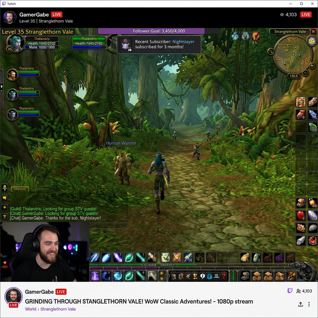

New to World of Warcraft? Here is everything you need to know about the game, the Hardcore challenge, and what makes this event special.
Released in 2004, World of Warcraft (WoW) is a massively multiplayer online role-playing game (MMORPG). Players create characters, explore a vast continent (Azeroth), fight monsters, complete quests, and team up with others to conquer massive dungeons.
The Burning Crusade (TBC) was the game's first expansion in 2007. It increased the maximum level from 60 to 70 and introduced a hostile, broken world called Outland. It is known for its brutal difficulty and unforgiving mechanics.

In standard WoW, when you die, you resurrect at a graveyard and run back to your body. There is a small durability penalty to your armor, but you lose no progress.
Hardcore changes the fundamental rule: Death is permanent.
If you die, your character is gone forever. All the hundreds of hours spent leveling, all your gold, and all your epic weapons are deleted. This makes every battle, every cave, and every decision incredibly tense. You cannot use the Auction House to buy gear from others, you cannot receive mail, and you cannot have high-level players help you.
"The Burning Crusade" was never balanced for Hardcore. Unavoidable mechanics and aggressive enemies make it nearly impossible.
The TBC Hardcore Addon tracks the rules, broadcasts deaths to viewers, and most importantly, introduces flexible modes. Instead of pure character deletion, players can play "Hardcore Plus" (account scoring) or "Softcore" (lose all gear on death, but survive). This makes TBC watchable, competitive, and fair.